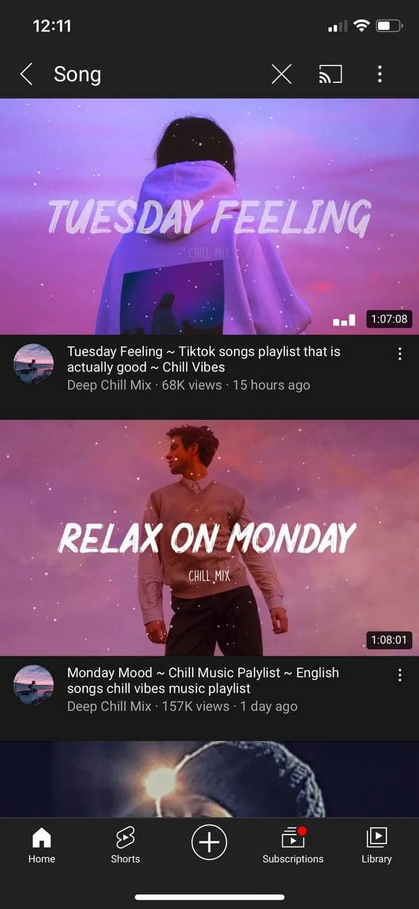

During my free time, I use to listen to music on youtube or spotify. Music is the art of science of combining vocal or instrumental
sounds. Listening to music takes the stress away from my mind. Music also can give me motivation that i need to overcome my life's problems. As a depression fighter
this also could be the best thearphy to decrease the bad feelings and reduce my stress level.

The benefits of listen to music